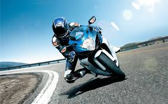
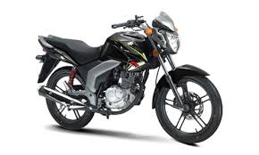
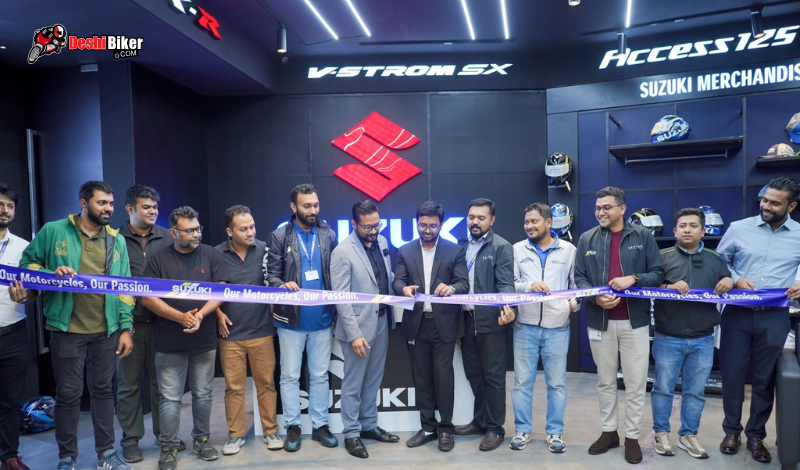

Not Every Bike Has 104 Years Behind It.
On 15th March 1920, Michio Suzuki founded a company in Hamamatsu, Japan. One hundred and four years later, that same obsession with precision powers every Suzuki on Bangladesh's roads.

On 15th March 1920, Michio Suzuki founded a company in Hamamatsu, Japan. One hundred and four years later, that same obsession with precision powers every Suzuki on Bangladesh's roads.
Proven at 300km/h. Engineered for your roads.
Hamamatsu-born. Bangladesh-proven.
Dual-Channel ABS. FI. SOCS. Standard.
Local manufacturing. Nationwide service. Genuine parts.
EVERY ROAD HAS A SUZUKI
Whether your road is the morning commute, the highway weekend, or the racetrack — there's a Suzuki engineered for it. Pick a category. Every bike inside it carries the same 104 years of Japanese precision.
SUZUKI · 250CC OIL-COOLED ENGINE
No other bike brand in Bangladesh opens its engine up and shows you what's inside. Suzuki does. The heart of the Gixxer SF 250 — engineered in Japan, tuned for Bangladesh.
Always runs cool
Breathes deeper
Lighter, faster
Precision spray
Zero vibration
Every gear ready
LIMITED TIME OFFERS
At a price that respects you.
MOTOGP HERITAGE · SINCE 1962
Suzuki entered Grand Prix racing in 1962. Joan Mir delivered the 2020 MotoGP World Championship on the GSX-RR. Six decades of obsession — distilled into every Gixxer.
See the bikesLaunched December 2024. Suzuki Ecstar livery on the Gixxer SF 250 MotoGP Edition — SOCS oil cooling, 6-speed gearbox, dual-channel ABS. The closest you'll get to the GSX-RR on a public road.
Explore Gixxer SF 250Electronic FI. Dual-channel ABS. Full-LED. Every spec was first refined under Grand Prix conditions, then calibrated for Dhaka traffic and the Dhaka–Chittagong highway.
Read the launch storyOUR MISSION
At Suzuki, safety isn't an afterthought. Every feature is engineered — because the most exciting rides are the ones you come home from.
Dual-Channel ABS — Standard
Full LED Lighting System
FI-Certified Service Centers
Every Rancon authorized service center is equipped with FI cleaners and trained technicians. A well-maintained Suzuki is a safe Suzuki.
→Ergonomic Design
Wear your helmet. Wear your gear. Ride a Suzuki.

Gixxer SF 250 · SylhetI've owned three bikes before my Gixxer SF 250. Nothing has come close to the confidence it gives on both highways and city streets. The stability at high speeds is unmatched.
“The torque hits different. Nothing else in this price feels this fast.”
— Sakib R.

Access 125 · Cox's Bazar“My scooter took me farther than I ever expected. Comfort is key, and the mileage held up across the entire ride.”
500+ authorized service centers. Factory-trained technicians. Genuine parts. Zero compromise.
Book your next service online in under 2 minutes. Pick your slot, drop your bike, ride home before evening.
Book NowFull coverage, hassle-free claims, nationwide. Every Suzuki bike is backed by RMBL's 2-year warranty.
Learn MoreOnly OEM parts. Your bike runs like day one. Stocked at every authorized service center across Bangladesh.
Order PartsFind your nearest authorized center in seconds. GPS-powered list, sorted by distance + travel time.
Find CenterTop News
Suzuki Bangladesh has officially launched the highly anticipated Suzuki Gixxer 250 series — bringing MotoGP-inspired design, race-bred performance and a new era of Suzuki ownership to the Bangladeshi rider.

Suzuki Bangladesh is thrilled to announce the much-awaited release of the all-new Suzuki Gixxer Fi Disc — bringing fuel-injection precision and disc-brake confidence to one of Bangladesh's most-loved motorbikes.
Bangladeshi popular film actor and youth icon Siam Ahmed has been signed as the regional brand ambassador of Suzuki — a partnership that brings Suzuki's spirit of performance and individuality to a new generation.
New launches. Exclusive deals. Riding tips. All in your inbox.
No spam. Unsubscribe anytime.